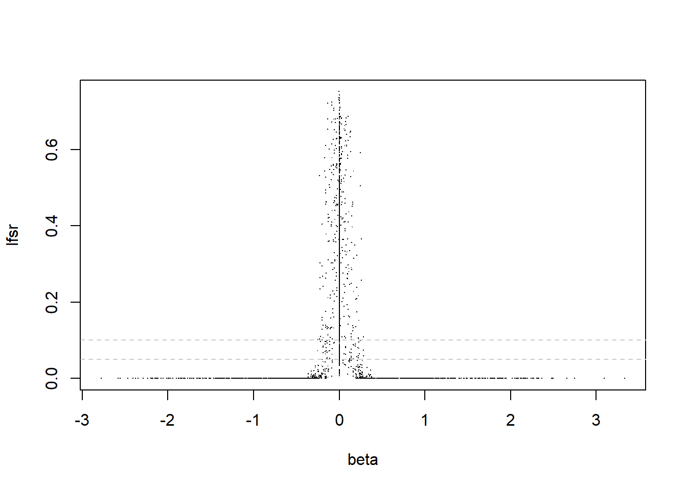

Last updated: 2020-09-14
Checks: 7 0
Knit directory: dear/
This reproducible R Markdown analysis was created with workflowr (version 1.6.2). The Checks tab describes the reproducibility checks that were applied when the results were created. The Past versions tab lists the development history.
Great! Since the R Markdown file has been committed to the Git repository, you know the exact version of the code that produced these results.
Great job! The global environment was empty. Objects defined in the global environment can affect the analysis in your R Markdown file in unknown ways. For reproduciblity it’s best to always run the code in an empty environment.
The command set.seed(20200403) was run prior to running the code in the R Markdown file. Setting a seed ensures that any results that rely on randomness, e.g. subsampling or permutations, are reproducible.
Great job! Recording the operating system, R version, and package versions is critical for reproducibility.
Nice! There were no cached chunks for this analysis, so you can be confident that you successfully produced the results during this run.
Great job! Using relative paths to the files within your workflowr project makes it easier to run your code on other machines.
Great! You are using Git for version control. Tracking code development and connecting the code version to the results is critical for reproducibility.
The results in this page were generated with repository version fdb2f14. See the Past versions tab to see a history of the changes made to the R Markdown and HTML files.
Note that you need to be careful to ensure that all relevant files for the analysis have been committed to Git prior to generating the results (you can use wflow_publish or wflow_git_commit). workflowr only checks the R Markdown file, but you know if there are other scripts or data files that it depends on. Below is the status of the Git repository when the results were generated:
Ignored files:
Ignored: .Rhistory
Ignored: .Rproj.user/
Untracked files:
Untracked: analysis/mash_mean.Rmd
Untracked: data/bulk_cytokin_SI.RData
Untracked: output/PLNfit_bulk_cytokin_SI.RData
Untracked: output/PLNfit_bulk_cytokin_SI_1_30.RData
Untracked: output/pln_simu_denseSigma_plnFit.RData
Untracked: output/pln_simu_diagSigma01.RData
Untracked: output/pln_simu_diagSigma_plnFit.RData
Note that any generated files, e.g. HTML, png, CSS, etc., are not included in this status report because it is ok for generated content to have uncommitted changes.
These are the previous versions of the repository in which changes were made to the R Markdown (analysis/mash_diagonal.Rmd) and HTML (docs/mash_diagonal.html) files. If you’ve configured a remote Git repository (see ?wflow_git_remote), click on the hyperlinks in the table below to view the files as they were in that past version.
| File | Version | Author | Date | Message |
|---|---|---|---|---|
| Rmd | fdb2f14 | DongyueXie | 2020-09-14 | wflow_publish(“analysis/mash_diagonal.Rmd”) |
library(mashr)
library(mvtnorm)
n_conditions = function(data){ncol(data$Bhat)}
n_effects = function(data){nrow(data$Bhat)}
bovy_wrapper = function(data, Ulist_init, subset=NULL, ...){
if(is.null(subset)){subset = 1:n_effects(data)}
K = length(Ulist_init)
R = n_conditions(data)
pi_init = rep(1/K, K) # initial mix proportions
D = ncol(data$V)
if(all(data$V==diag(D))){
ed.res = extreme_deconvolution(data$Bhat[subset,],
data$Shat[subset,]^2,
xamp = pi_init,
xmean = matrix(0,nrow=K,ncol=R),
xcovar = Ulist_init,
fixmean = TRUE,
...)
}else{
if(!is.null(data$L)){
ycovar = lapply(subset, function(i) data$L %*% (data$Shat_orig[i,] * t(data$V * data$Shat_orig[i,])) %*% t(data$L) )
}else{
ycovar = lapply(subset, function(i) data$Shat[i,] * t(data$V * data$Shat[i,]) )
}
ed.res = extreme_deconvolution(data$Bhat[subset,],
ycovar,
xamp = pi_init,
xmean = matrix(0,nrow=K,ncol=R),
xcovar = Ulist_init,
fixmean = TRUE,
...)
}
return(list(pi = ed.res$xamp, Ulist = ed.res$xcovar, av_loglik = ed.res$avgloglikedata))
}
calc_loglikx = function(data,subset,pihat,Ulist,sigma){
n = length(subset)
loglik = 0
for(i in subset){
loglik = loglik + mixture_loglikx(data$Bhat[i,],data$Shat[i,],pihat,Ulist,sigma)
}
loglik
}
mixture_loglikx = function(x,shat,pihat,Ulist,sigma){
K = length(pihat)
p = length(x)
lik = 0
for(k in 1:K){
#browser()
lik = lik + pihat[k]*dmvnorm(x,sigma = Ulist[[k]]+diag(shat^2)+sigma^2*diag(p))
}
log(lik)
}
fdp = function(dis.idx, true.idx){
if(length(dis.idx)==0){
0
}else{
1-mean(dis.idx%in%true.idx)
}
}
auc = function(pred,true.label){
auc=pROC::roc(response = true.label, predictor = pred,direction = '<',levels = c(0,1))
auc$auc
}
powr = function(dis.idx, true.idx){
if(length(dis.idx)==0){
0
}else{
sum(dis.idx%in%true.idx)/length(true.idx)
}
}
mse = function(x,y){
mean((x-y)^2)
}
summary_out = function(B,out = list(m.c=m.c,m.ed=m.ed,m.c.ed=m.c.ed,m.true=m.true),
alpha=0.05,criteria = 'lfsr'){
# identify genes
non_null_idx = which(rowSums(B)!=0)
non_null_idx_c = which(B!=0)
which_null = 1*(rowSums(B)==0)
which_null_c = 1*(B==0)
fdps = c()
#aucs = c()
powers = c()
fdps_c = c()
#aucs_c = c()
powers_c = c()
mses = c()
log_liks = c()
for(i in 1:length(out)){
if(criteria=='lfsr'){
fdps[i] = fdp(get_significant_results(out[[i]],thresh = alpha),non_null_idx)
fdps_c[i] = fdp(which(out[[i]]$result$lfsr<alpha),non_null_idx_c)
#aucs[i] = auc(c(apply(out[[i]]$result$lfsr,1,min)),which_null)
#aucs_c[i] = auc(c(out[[i]]$result$lfsr),c(which_null_c))
powers[i] = powr(get_significant_results(out[[i]],thresh = alpha),non_null_idx)
powers_c[i] = powr(which(out[[i]]$result$lfsr<alpha),non_null_idx_c)
}
if(criteria=='lfdr'){
fdps[i] = fdp(get_significant_results(out[[i]],thresh = alpha),non_null_idx)
fdps_c[i] = fdp(which(out[[i]]$result$lfdr<alpha),non_null_idx_c)
#aucs[i] = auc(c(apply(out[[i]]$result$lfdr,1,min)),which_null)
#aucs_c[i] = auc(c(out[[i]]$result$lfdr),c(which_null_c))
powers[i] = powr(get_significant_results(out[[i]],thresh = alpha),non_null_idx)
powers_c[i] = powr(which(out[[i]]$result$lfdr<alpha),non_null_idx_c)
}
mses[i] = mse(B,out[[i]]$result$PosteriorMean)
log_liks[i] = get_loglik(out[[i]])
}
find_genes = rbind(fdps,powers)
rownames(find_genes) = c('fdp','power')
colnames(find_genes) = names(out)
find_cond = rbind(fdps_c,powers_c,mses,log_liks)
rownames(find_cond) = c('fdp','power','mse','log_lik')
colnames(find_cond) = names(out)
return(list(find_genes=find_genes,find_cond=find_cond,mses=mses))
}
simu_study = function(simdata,subset){
data = mash_set_data(simdata$Bhat,simdata$Shat)
#m.1by1 = mash_1by1(data)
#strong = get_significant_results(m.1by1)
strong = subset
U.c = cov_canonical(data)
U.pca = cov_pca(data,5,strong)
U.ed = cov_ed(data,U.pca,strong)
U.true = simdata$U.true
m.c = mash(data, U.c,verbose = F)
m.ed = mash(data, U.ed,verbose = F)
m.c.ed = mash(data, c(U.c,U.ed),verbose = F)
#m.c.ed.sparse = mash(data, c(U.c,U.ed.sparse),verbose = F)
m.true = mash(data, U.true,verbose = F)
out = list(m.c=m.c,m.ed=m.ed,m.c.ed=m.c.ed,m.true=m.true)
out
}Since mash includes data-driven covariance matrices in prior, the uncertainty in estimation results in “non-robustness” of subsequent estimates of lfsr. We start with an example illustrating the problem.
We generate \(X\) from a mixture of 2 multivariate normal distributions, \(x_i\sim \sum_k\pi_k N(0,U_k+S_i)\), with the following covariance matrices: present (and identical) in first two conditions, present (and identical) in last three conditions, each with 500 samples(so \(\pi_1=\pi_2=0.5\)), and \(S_i=diag(0.1,...,0.1)\).
Two covariance matrices are:
cov1 = c(1,1,0,0,0)%*%t(c(1,1,0,0,0))
cov2 = c(0,0,1,1,1)%*%t(c(0,0,1,1,1))
print(cov1) [,1] [,2] [,3] [,4] [,5]
[1,] 1 1 0 0 0
[2,] 1 1 0 0 0
[3,] 0 0 0 0 0
[4,] 0 0 0 0 0
[5,] 0 0 0 0 0print(cov2) [,1] [,2] [,3] [,4] [,5]
[1,] 0 0 0 0 0
[2,] 0 0 0 0 0
[3,] 0 0 1 1 1
[4,] 0 0 1 1 1
[5,] 0 0 1 1 1simple_sims0 = function(nsamp = 100, err_sd = 0.01){
ncond = 5
b1 = rnorm(nsamp)
B.1 = matrix(cbind(b1, b1, 0, 0, 0), nrow = nsamp, ncol = ncond)
b2 = rnorm(nsamp)
B.2 = matrix(cbind(0, 0, b2, b2, b2), nrow = nsamp, ncol = ncond)
#B.id = matrix(rnorm(nsamp * ncond), nrow = nsamp, ncol = ncond)
#B.zero = matrix(0, nrow = nsamp, ncol = ncond)
B = rbind(B.1, B.2)
Shat = matrix(err_sd, nrow = nrow(B), ncol = ncol(B))
E = matrix(rnorm(length(Shat), mean = 0, sd = Shat), nrow = nrow(B), ncol = ncol(B))
Bhat = B + E
row_ids = paste0("effect_", 1:nrow(B))
col_ids = paste0("condition_", 1:ncol(B))
rownames(B) = row_ids
colnames(B) = col_ids
rownames(Bhat) = row_ids
colnames(Bhat) = col_ids
rownames(Shat) = row_ids
colnames(Shat) = col_ids
U = matrix(0,nrow=ncond,ncol=ncond)
U2 = U
U2[1:2,1:2] = 1
U3 = U
U3[3:5,3:5] = 1
U.true = list(#U1 = matrix(0,nrow=ncond,ncol=ncond),
U2=U2,
U3=U3)
#U4 = diag(ncond))
return(list(B = B, Bhat = Bhat, Shat = Shat,U.true=U.true))
}
set.seed(12345)
simdata = simple_sims0(500,err_sd = 0.1)
data = mash_set_data(simdata$Bhat,simdata$Shat)
#m.1by1 = mash_1by1(data)
#strong = get_significant_results(m.1by1)
strong = 1:nrow(simdata$B)
U.c = cov_canonical(data)
U.pca = cov_pca(data,5,strong)
ed.out = bovy_wrapper(data,U.pca,strong)We first look at ED estimates of \(\pi_k, U_k\)’s.
Estimated mixing proportions:
round(ed.out$pi,2)[1] 0.5 0.5 0.0 0.0 0.0 0.0Estimated covariance matrices:
lapply(ed.out$Ulist,round,digits=3)$PCA_1
[,1] [,2] [,3] [,4] [,5]
[1,] 0.000 0.000 -0.003 -0.003 -0.003
[2,] 0.000 0.000 -0.002 -0.002 -0.002
[3,] -0.003 -0.002 1.006 1.012 1.010
[4,] -0.003 -0.002 1.012 1.017 1.015
[5,] -0.003 -0.002 1.010 1.015 1.013
$PCA_2
[,1] [,2] [,3] [,4] [,5]
[1,] 1.000 0.988 -0.002 -0.004 0.011
[2,] 0.988 0.976 -0.002 -0.004 0.011
[3,] -0.002 -0.002 0.000 0.000 0.000
[4,] -0.004 -0.004 0.000 0.000 0.000
[5,] 0.011 0.011 0.000 0.000 0.000
$PCA_3
[,1] [,2] [,3] [,4] [,5]
[1,] 0 0 0 0 0
[2,] 0 0 0 0 0
[3,] 0 0 0 0 0
[4,] 0 0 0 0 0
[5,] 0 0 0 0 0
$PCA_4
[,1] [,2] [,3] [,4] [,5]
[1,] 0.011 -0.011 0.002 0.001 -0.003
[2,] -0.011 0.011 -0.002 -0.001 0.003
[3,] 0.002 -0.002 0.000 0.000 -0.001
[4,] 0.001 -0.001 0.000 0.000 0.000
[5,] -0.003 0.003 -0.001 0.000 0.001
$PCA_5
[,1] [,2] [,3] [,4] [,5]
[1,] 0 0 0.000 0 0
[2,] 0 0 0.000 0 0
[3,] 0 0 0.001 0 0
[4,] 0 0 0.000 0 0
[5,] 0 0 0.000 0 0
$tPCA
[,1] [,2] [,3] [,4] [,5]
[1,] 0.040 0.020 -0.302 -0.308 -0.288
[2,] 0.020 0.010 -0.153 -0.156 -0.146
[3,] -0.302 -0.153 2.328 2.374 2.222
[4,] -0.308 -0.156 2.374 2.421 2.266
[5,] -0.288 -0.146 2.222 2.266 2.121Then run mash with estimated prior covariance matrices. We compare 4 different settings: only use canonical ones(m.c), only use ED estimated ones(m.ed), use both canonical ones and ED estimated ones(m.c.ed), and true ones(m.true).
result = simu_study(simdata,1:nrow(simdata$B))
out = summary_out(simdata$B,result)
knitr::kable(out$find_cond,caption = 'On finding conditions',digits = 5)| m.c | m.ed | m.c.ed | m.true | |
|---|---|---|---|---|
| fdp | 0.08686 | 0.49838 | 0.49838 | 0.00186 |
| power | 0.82000 | 0.86960 | 0.86960 | 0.85880 |
| mse | 0.00867 | 0.00223 | 0.00223 | 0.00218 |
| log_lik | -3795.92910 | 1108.14843 | 1108.14843 | 1103.28838 |
Adding ED estimated covariance matrices inflates FDP while increase power and likelihood, reduces mse. Now look at lfsr.
hist(c(result$m.c.ed$result$lfsr),breaks = 100,xlab='lfsr',main="Histogram of lfsr")hist(result$m.c.ed$result$lfsr[which(simdata$B==0)],breaks = 100,xlab='lfsr',main="Histogram of lfsr for those beta=0")plot(c(simdata$B), c(result$m.c.ed$result$lfsr),col=1,pch=".",xlab='beta',ylab='lfsr')
abline(h = 0.05,lty=2,col='grey80')
abline(h = 0.1,lty=2,col='grey80')We first obtain estimates of \(\pi_k,U_k\) from ED(without diagonal cov) and fix them, then add \(\sigma^2I\), calculate log likelihood, and choose \(\sigma^2\) such that log-likelihood drops by a factor of 2. The log likelihood is \[\log L(X) = \sum_i\log(\sum_k\pi_k N(x_i;0,U_k+S_i+\sigma^2 I)).\]
U.ed.diag = lapply(ed.out$Ulist,function(z){z+(0.113)^2*diag(5)})
m.ed.diag = mash(data, U.ed.diag,verbose = F)
m.c.ed.diag = mash(data, c(U.c,U.ed.diag),verbose = F)
result$m.ed.diag = m.ed.diag
result$m.c.ed.diag = m.c.ed.diag
out = summary_out(simdata$B,result)
knitr::kable(out$find_cond,caption = 'On finding conditions',digits = 5)| m.c | m.ed | m.c.ed | m.true | m.ed.diag | m.c.ed.diag | |
|---|---|---|---|---|---|---|
| fdp | 0.08686 | 0.49838 | 0.49838 | 0.00186 | 0.01194 | 0.01194 |
| power | 0.82000 | 0.86960 | 0.86960 | 0.85880 | 0.86040 | 0.86040 |
| mse | 0.00867 | 0.00223 | 0.00223 | 0.00218 | 0.00350 | 0.00350 |
| log_lik | -3795.92910 | 1108.14843 | 1108.14843 | 1103.28838 | 750.77053 | 750.77054 |
hist(m.c.ed.diag$result$lfsr,breaks = 100,xlab='lfsr',main="Histogram of lfsr")hist(m.c.ed.diag$result$lfsr[which(simdata$B==0)],breaks = 100,xlab='lfsr',main="Histogram of lfsr for those beta=0")plot(c(simdata$B), c(m.c.ed.diag$result$lfsr),col=1,pch=".",xlab='beta',ylab='lfsr')
abline(h = 0.05,lty=2,col='grey80')
abline(h = 0.1,lty=2,col='grey80')
How about a smaller \(\sigma^2\)? say \(\sigma^2=0.01^2\)
U.ed.diag = lapply(ed.out$Ulist,function(z){z+(0.01)^2*diag(5)})
m.ed.diag = mash(data, U.ed.diag,verbose = F)
m.c.ed.diag = mash(data, c(U.c,U.ed.diag),verbose = F)
result$m.ed.diag = m.ed.diag
result$m.c.ed.diag = m.c.ed.diag
out = summary_out(simdata$B,result)
knitr::kable(out$find_cond,caption = 'On finding conditions',digits = 5)| m.c | m.ed | m.c.ed | m.true | m.ed.diag | m.c.ed.diag | |
|---|---|---|---|---|---|---|
| fdp | 0.08686 | 0.49838 | 0.49838 | 0.00186 | 0.02704 | 0.02704 |
| power | 0.82000 | 0.86960 | 0.86960 | 0.85880 | 0.86360 | 0.86360 |
| mse | 0.00867 | 0.00223 | 0.00223 | 0.00218 | 0.00223 | 0.00223 |
| log_lik | -3795.92910 | 1108.14843 | 1108.14843 | 1103.28838 | 1107.29594 | 1107.29601 |
#hist(m.c.ed.diag$result$lfsr,breaks = 100,xlab='lfsr',main="Histogram of lfsr")
hist(m.c.ed.diag$result$lfsr[which(simdata$B==0)],breaks = 100,xlab='lfsr',main="Histogram of lfsr for those beta=0")#plot(c(simdata$B), c(m.c.ed.diag$result$lfsr),col=1,pch=".",xlab='beta',ylab='lfsr')
#abline(h = 0.05,lty=2,col='grey80')
#abline(h = 0.1,lty=2,col='grey80')Further reduce \(\sigma^2\) to \(0.005^2\).
U.ed.diag = lapply(ed.out$Ulist,function(z){z+(0.005)^2*diag(5)})
m.ed.diag = mash(data, U.ed.diag,verbose = F)
m.c.ed.diag = mash(data, c(U.c,U.ed.diag),verbose = F)
result$m.ed.diag = m.ed.diag
result$m.c.ed.diag = m.c.ed.diag
out = summary_out(simdata$B,result)
knitr::kable(out$find_cond,caption = 'On finding conditions',digits = 5)| m.c | m.ed | m.c.ed | m.true | m.ed.diag | m.c.ed.diag | |
|---|---|---|---|---|---|---|
| fdp | 0.08686 | 0.49838 | 0.49838 | 0.00186 | 0.09332 | 0.09332 |
| power | 0.82000 | 0.86960 | 0.86960 | 0.85880 | 0.86280 | 0.86280 |
| mse | 0.00867 | 0.00223 | 0.00223 | 0.00218 | 0.00223 | 0.00223 |
| log_lik | -3795.92910 | 1108.14843 | 1108.14843 | 1103.28838 | 1107.95260 | 1107.95261 |
(How to decide the size of \(\sigma^2\))
Now we generate data from a mixture of 4 multivariate normal distributions. In addition to the two above, we add point-mass and identity ones.
simple_sims2 = function (nsamp = 100, err_sd = 0.01){
ncond = 5
b1 = rnorm(nsamp)
B.1 = matrix(cbind(b1, b1, 0, 0, 0), nrow = nsamp, ncol = ncond)
b2 = rnorm(nsamp)
B.2 = matrix(cbind(0, 0, b2, b2, b2), nrow = nsamp, ncol = ncond)
B.id = matrix(rnorm(nsamp * ncond), nrow = nsamp, ncol = ncond)
B.zero = matrix(0, nrow = nsamp, ncol = ncond)
B = rbind(B.zero,B.id,B.1, B.2)
Shat = matrix(err_sd, nrow = nrow(B), ncol = ncol(B))
E = matrix(rnorm(length(Shat), mean = 0, sd = Shat), nrow = nrow(B),
ncol = ncol(B))
Bhat = B + E
row_ids = paste0("effect_", 1:nrow(B))
col_ids = paste0("condition_", 1:ncol(B))
rownames(B) = row_ids
colnames(B) = col_ids
rownames(Bhat) = row_ids
colnames(Bhat) = col_ids
rownames(Shat) = row_ids
colnames(Shat) = col_ids
U = matrix(0,nrow=ncond,ncol=ncond)
U2 = U
U2[1:2,1:2] = 1
U3 = U
U3[3:5,3:5] = 1
U.true = list(U1 = matrix(0,nrow=ncond,ncol=ncond),
U2=U2,
U3=U3,
U4 = diag(ncond))
return(list(B = B, Bhat = Bhat, Shat = Shat,U.true=U.true))
}
set.seed(12345)
simdata = simple_sims2(500,err_sd = 0.1)
data = mash_set_data(simdata$Bhat,simdata$Shat)
m.1by1 = mash_1by1(data)
strong = get_significant_results(m.1by1)
#strong = 1:nrow(simdata$B)
U.c = cov_canonical(data)
U.pca = cov_pca(data,5,strong)
ed.out = bovy_wrapper(data,U.pca,strong)Estimated mixing proportions:
round(ed.out$pi,2)[1] 0.29 0.29 0.00 0.00 0.00 0.42Estimated covariance matrices:
lapply(ed.out$Ulist,round,digits=3)$PCA_1
[,1] [,2] [,3] [,4] [,5]
[1,] 0.009 0.016 -0.097 -0.097 -0.097
[2,] 0.016 0.028 -0.170 -0.171 -0.169
[3,] -0.097 -0.170 1.033 1.039 1.030
[4,] -0.097 -0.171 1.039 1.045 1.036
[5,] -0.097 -0.169 1.030 1.036 1.027
$PCA_2
[,1] [,2] [,3] [,4] [,5]
[1,] 1.128 1.133 0.083 0.133 0.076
[2,] 1.133 1.139 0.084 0.133 0.076
[3,] 0.083 0.084 0.006 0.010 0.006
[4,] 0.133 0.133 0.010 0.016 0.009
[5,] 0.076 0.076 0.006 0.009 0.005
$PCA_3
[,1] [,2] [,3] [,4] [,5]
[1,] 0.011 -0.010 0.004 -0.006 0.001
[2,] -0.010 0.010 -0.004 0.005 -0.001
[3,] 0.004 -0.004 0.002 -0.002 0.000
[4,] -0.006 0.005 -0.002 0.003 0.000
[5,] 0.001 -0.001 0.000 0.000 0.000
$PCA_4
[,1] [,2] [,3] [,4] [,5]
[1,] 0.005 -0.005 -0.017 0.008 0.009
[2,] -0.005 0.006 0.017 -0.008 -0.009
[3,] -0.017 0.017 0.055 -0.025 -0.029
[4,] 0.008 -0.008 -0.025 0.012 0.013
[5,] 0.009 -0.009 -0.029 0.013 0.015
$PCA_5
[,1] [,2] [,3] [,4] [,5]
[1,] 0.001 -0.001 0.000 0.003 -0.003
[2,] -0.001 0.001 0.000 -0.003 0.003
[3,] 0.000 0.000 0.000 0.001 -0.001
[4,] 0.003 -0.003 0.001 0.009 -0.010
[5,] -0.003 0.003 -0.001 -0.010 0.011
$tPCA
[,1] [,2] [,3] [,4] [,5]
[1,] 1.015 0.104 0.002 -0.003 -0.012
[2,] 0.104 1.031 -0.073 -0.008 -0.087
[3,] 0.002 -0.073 1.048 0.181 0.183
[4,] -0.003 -0.008 0.181 1.048 0.224
[5,] -0.012 -0.087 0.183 0.224 1.015result = simu_study(simdata,strong)l = 100
sigma_seq = seq(0,1,length.out = l)
llik = c()
for(i in 1:l){
#print(i)
llik[i] = calc_loglikx(data,strong,ed.out$pi,ed.out$Ulist,sigma_seq[i])
}
plot(sigma_seq,llik,type='l',xlab = 'sigma',ylab='log likelihood')
abline(v = sigma_seq[which.max(llik)],lty=2)
text(x = sigma_seq[which.max(llik)]+0.03,y = min(llik), labels=paste('sigma=',round(sigma_seq[which.max(llik)],3),sep = ''))We first set \(\sigma^2 = 0.091^2\), as it’s the MLE.
U.ed.diag = lapply(ed.out$Ulist,function(z){z+(0.09)^2*diag(5)})
m.ed.diag = mash(data, U.ed.diag,verbose = F)
m.c.ed.diag = mash(data, c(U.c,U.ed.diag),verbose = F)
result$m.ed.diag = m.ed.diag
result$m.c.ed.diag = m.c.ed.diag
out = summary_out(simdata$B,result)
knitr::kable(out$find_cond,caption = 'On finding conditions',digits = 5)| m.c | m.ed | m.c.ed | m.true | m.ed.diag | m.c.ed.diag | |
|---|---|---|---|---|---|---|
| fdp | 0.04427 | 0.30190 | 0.30452 | 0.00000 | 0.06068 | 0.06068 |
| power | 0.82900 | 0.84680 | 0.84640 | 0.84560 | 0.84520 | 0.84520 |
| mse | 0.00722 | 0.00625 | 0.00629 | 0.00389 | 0.00529 | 0.00529 |
| log_lik | -6223.89808 | -3214.97924 | -3207.46270 | -1925.12766 | -2862.29386 | -2848.10975 |
hist(m.c.ed.diag$result$lfsr,breaks = 100,xlab='lfsr',main="Histogram of lfsr")hist(m.c.ed.diag$result$lfsr[which(simdata$B==0)],breaks = 100,xlab='lfsr',main="Histogram of lfsr for those beta=0")#plot(c(simdata$B), c(m.c.ed.diag$result$lfsr),col=1,pch=".",xlab='beta',ylab='lfsr')
#abline(h = 0.05,lty=2,col='grey80')
#abline(h = 0.1,lty=2,col='grey80')Then we set \(\sigma^2\) such that the log-likelihood drops by a factor of 2(compare to the maximum), where \(\sigma^2 = 1.2^2\).
U.ed.diag = lapply(ed.out$Ulist,function(z){z+(1.2)^2*diag(5)})
m.ed.diag = mash(data, U.ed.diag,verbose = F)
m.c.ed.diag = mash(data, c(U.c,U.ed.diag),verbose = F)
result$m.ed.diag = m.ed.diag
result$m.c.ed.diag = m.c.ed.diag
out = summary_out(simdata$B,result)
knitr::kable(out$find_cond,caption = 'On finding conditions',digits = 5)| m.c | m.ed | m.c.ed | m.true | m.ed.diag | m.c.ed.diag | |
|---|---|---|---|---|---|---|
| fdp | 0.04427 | 0.30190 | 0.30452 | 0.00000 | 0.04198 | 0.04174 |
| power | 0.82900 | 0.84680 | 0.84640 | 0.84560 | 0.83520 | 0.83560 |
| mse | 0.00722 | 0.00625 | 0.00629 | 0.00389 | 0.00698 | 0.00699 |
| log_lik | -6223.89808 | -3214.97924 | -3207.46270 | -1925.12766 | -5601.55293 | -5598.93172 |
hist(m.c.ed.diag$result$lfsr,breaks = 100,xlab='lfsr',main="Histogram of lfsr")hist(m.c.ed.diag$result$lfsr[which(simdata$B==0)],breaks = 100,xlab='lfsr',main="Histogram of lfsr for those beta=0")#plot(c(simdata$B), c(m.c.ed.diag$result$lfsr),col=1,pch=".",xlab='beta',ylab='lfsr')
#abline(h = 0.05,lty=2,col='grey80')
#abline(h = 0.1,lty=2,col='grey80')
sessionInfo()R version 4.0.1 (2020-06-06)
Platform: x86_64-w64-mingw32/x64 (64-bit)
Running under: Windows 10 x64 (build 18362)
Matrix products: default
locale:
[1] LC_COLLATE=English_United States.1252
[2] LC_CTYPE=English_United States.1252
[3] LC_MONETARY=English_United States.1252
[4] LC_NUMERIC=C
[5] LC_TIME=English_United States.1252
attached base packages:
[1] stats graphics grDevices utils datasets methods base
other attached packages:
[1] mvtnorm_1.1-0 mashr_0.2.38 ashr_2.2-50 workflowr_1.6.2
loaded via a namespace (and not attached):
[1] Rcpp_1.0.4.6 knitr_1.28 whisker_0.4 magrittr_1.5
[5] SQUAREM_2020.3 lattice_0.20-41 R6_2.4.1 rlang_0.4.6
[9] highr_0.8 plyr_1.8.6 stringr_1.4.0 tools_4.0.1
[13] grid_4.0.1 xfun_0.14 rmeta_3.0 irlba_2.3.3
[17] invgamma_1.1 git2r_0.27.1 htmltools_0.5.0 assertthat_0.2.1
[21] abind_1.4-5 yaml_2.2.1 digest_0.6.25 rprojroot_1.3-2
[25] mixsqp_0.3-43 Matrix_1.2-18 later_1.1.0.1 promises_1.1.0
[29] fs_1.4.1 glue_1.4.1 evaluate_0.14 rmarkdown_2.3
[33] stringi_1.4.6 compiler_4.0.1 backports_1.1.7 truncnorm_1.0-8
[37] httpuv_1.5.4